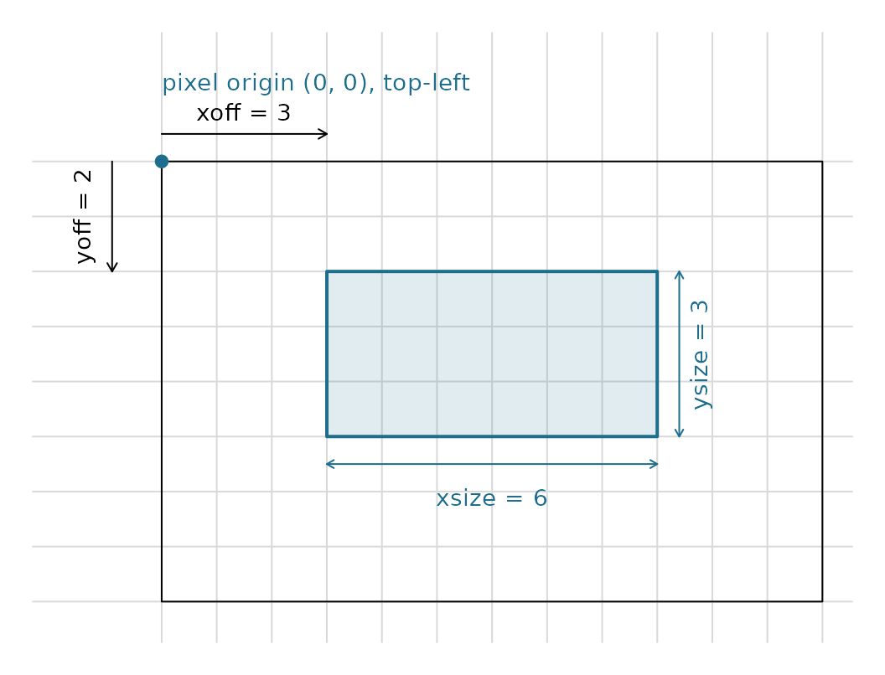

Introduction
GDAL (Geospatial Data Abstraction Library) is the foundation of most geospatial software. It uses specific conventions for representing raster grids that differ from R’s typical approach.
The vaster package provides functions to convert
between vaster’s dimension/extent
representation and GDAL’s conventions, enabling seamless integration
with GDAL-based tools.
GDAL GeoTransform
GDAL represents raster georeferencing using a 6-element GeoTransform array:
GT[0]: x-coordinate of the upper-left corner
GT[1]: pixel width (x resolution)
GT[2]: row rotation (typically 0)
GT[3]: y-coordinate of the upper-left corner
GT[4]: column rotation (typically 0)
GT[5]: pixel height (negative for north-up images)For a typical north-up raster, only elements 0, 1, 3, and 5 are non-zero.
Converting to GeoTransform
The geo_transform0() function converts vaster’s
dimension/extent to a GDAL GeoTransform:
dimension <- c(10, 5)
extent <- c(0, 100, 0, 50)
gt <- geo_transform0(dimension, extent)
gt
#> xmin xres yskew ymax xskew yres
#> 0 10 0 100 0 5The GeoTransform tells us:
- Upper-left corner is at
(0, 50)- note y is at the top - Pixel width is
10units - Pixel height is
-10units (negative because y decreases downward)
Converting from GeoTransform
Given a GeoTransform and dimensions, gt_dim_to_extent()
recovers the extent:
gt <- c(0, 10, 0, 50, 0, -10)
dimension <- c(10, 5)
gt_dim_to_extent(gt, dimension)
#> [1] 0 100 0 50And extent_dim_to_gt() does the reverse:
extent_dim_to_gt(c(0, 100, 0, 50), c(10, 5))
#> xmin xres yskew ymax xskew yres
#> 0 10 0 50 0 -10World Files
World files (.tfw, .pgw, .jgw,
etc.) are a simpler georeferencing format used by many applications.
They contain 6 lines:
Line 1: pixel width
Line 2: row rotation
Line 3: column rotation
Line 4: pixel height (negative for north-up)
Line 5: x-coordinate of centre of upper-left pixel
Line 6: y-coordinate of centre of upper-left pixelConverting to World File Format
dimension <- c(10, 5)
extent <- c(0, 100, 0, 50)
wf <- geo_world0(dimension, extent)
wf
#> xres yskew xskew yres xmin ymax
#> 10.0 0.0 0.0 5.0 5.0 102.5Note the difference from GeoTransform: the world file specifies the centre of the upper-left pixel, not its corner.
GDAL RasterIO
GDAL’s RasterIO function is the core mechanism for
reading/writing raster data. It uses a window specification:
(xoff, yoff, xsize, ysize)Where: - xoff: column offset (0-based, from left) -
yoff: row offset (0-based, from top) - xsize:
number of columns to read - ysize: number of rows to
read
Converting Extent to RasterIO Window
The rasterio0() function converts an extent to RasterIO
parameters:
## Full grid
dimension <- c(360, 180)
extent <- c(-180, 180, -90, 90)
## Subregion to read (Australia)
subextent <- c(110, 155, -45, -10)
rio <- rasterio0(dimension, extent, subextent)
rio
#> offset_x offset_y source_nx source_ny out_nx out_ny <NA> <NA>
#> 360 180 -180 180 -90 90 110 155
#> <NA> <NA>
#> -45 -10
#> attr(,"resample")
#> [1] "NearestNeighbour"This tells you: - Start at column 360 (0-based offset) - Start at row 180 (0-based offset) - Read -180 columns - Read 180 rows
The window is measured in pixel space: offsets count from the top-left pixel (0, 0), with the row offset increasing downward, and the sizes are counts of columns and rows to read.
rdm <- c(12L, 8L); rex <- c(0, 12, 0, 8)
xoff <- 3L; yoff <- 2L; xsize <- 6L; ysize <- 3L
op <- par(mar = c(1, 1, 1, 1))
plot(NA, xlim = c(-1.8, 12), ylim = c(0, 9.6), asp = 1, axes = FALSE, xlab = "", ylab = "")
abline(v = x_corner(rdm, rex), h = y_corner(rdm, rex), col = "grey85")
rect(rex[1], rex[3], rex[2], rex[4])
wx <- c(xoff, xoff + xsize); wy <- c(rex[4] - (yoff + ysize), rex[4] - yoff)
rect(wx[1], wy[1], wx[2], wy[2], col = "#1C6E8C22", border = "#1C6E8C", lwd = 2)
points(0, 8, pch = 19, col = "#1C6E8C")
text(0, 9.4, "pixel origin (0, 0), top-left", adj = 0, col = "#1C6E8C", cex = 0.9)
arrows(0, 8.5, xoff, 8.5, length = 0.06); text(xoff / 2, 8.9, "xoff = 3", cex = 0.9)
arrows(-0.9, 8, -0.9, rex[4] - yoff, length = 0.06); text(-1.4, 7, "yoff = 2", srt = 90, cex = 0.9)
arrows(wx[1], wy[1] - 0.5, wx[2], wy[1] - 0.5, code = 3, length = 0.05, col = "#1C6E8C")
text(mean(wx), wy[1] - 1.1, "xsize = 6", col = "#1C6E8C", cex = 0.9)
arrows(wx[2] + 0.4, wy[1], wx[2] + 0.4, wy[2], code = 3, length = 0.05, col = "#1C6E8C")
text(wx[2] + 0.8, mean(wy), "ysize = 3", col = "#1C6E8C", srt = 90, cex = 0.9)
par(op)Using with vapour or stars
These parameters can be passed directly to GDAL-based R packages:
## With vapour package
library(vapour)
data <- vapour_read_raster(
"my_raster.tif",
window = rasterio0(dimension, extent, subextent)
)
## With stars package
library(stars)
rio <- rasterio0(dimension, extent, subextent)
data <- stars::read_stars(
"my_raster.tif",
RasterIO = list(
nXOff = rio[1] + 1, # stars uses 1-based
nYOff = rio[2] + 1,
nXSize = rio[3],
nYSize = rio[4]
)
)Converting to sf-style RasterIO
The rasterio_to_sfio() function converts to the 1-based
format used by sf/stars:
rio <- rasterio0(dimension, extent, subextent)
sfio <- rasterio_to_sfio(rio)
sfio
#> $nXOff
#> offset_x
#> 361
#>
#> $nYOff
#> offset_y
#> 181
#>
#> $nXSize
#> source_nx
#> -180
#>
#> $nYSize
#> source_ny
#> 180
#>
#> $nBufXSize
#> out_nx
#> -90
#>
#> $nBufYSize
#> out_ny
#> 90
#>
#> $resample
#> [1] "nearest_neighbour"VRT Files
GDAL Virtual Format (VRT) files are XML descriptions of raster datasets. They’re useful for creating virtual mosaics and defining subsets without copying data.
Extracting Extent from VRT
The extent_vrt() function parses a VRT file to extract
its extent:
## Parse VRT and get extent
vrt_file <- "path/to/mosaic.vrt"
ext <- extent_vrt(vrt_file)
extThis is useful for understanding the coverage of a virtual mosaic before reading data.
Practical Example: Pre-computing Read Parameters
A common workflow is to pre-compute read parameters for efficient data access:
## Known raster properties (e.g., from gdalinfo)
full_dimension <- c(43200, 21600) # global 30 arc-second grid
full_extent <- c(-180, 180, -90, 90)
## Regions of interest
regions <- list(
europe = c(-10, 40, 35, 70),
australia = c(110, 155, -45, -10),
amazon = c(-80, -45, -20, 5)
)
## Pre-compute RasterIO parameters for each region
read_params <- lapply(regions, function(roi) {
aligned <- align_extent(roi, full_dimension, full_extent)
crop_dim <- extent_dimension(aligned, full_dimension, full_extent)
list(
rasterio = rasterio0(full_dimension, full_extent, aligned),
dimension = crop_dim,
extent = aligned
)
})
## Check Amazon parameters
read_params$amazon
#> $rasterio
#> offset_x offset_y source_nx source_ny out_nx out_ny <NA> <NA>
#> 43200 21600 -180 180 -90 90 -80 -45
#> <NA> <NA>
#> -20 5
#> attr(,"resample")
#> [1] "NearestNeighbour"
#>
#> $dimension
#> [1] 4200 3000
#>
#> $extent
#> [1] -80 -45 -20 5This lets you plan I/O operations before touching the data.
Practical Example: Creating Aligned Grids
When creating output grids compatible with GDAL tools:
## Design a 1-degree global grid
target_res <- 1 # 1 degree cells
global_extent <- c(-180, 180, -90, 90)
## Compute dimensions from extent and resolution
dimension <- c(
diff(global_extent[1:2]) / target_res,
diff(global_extent[3:4]) / target_res
)
dimension
#> [1] 360 180
## Generate GeoTransform for GDAL
gt <- geo_transform0(dimension, global_extent)
gt
#> xmin xres yskew ymax xskew yres
#> -180 360 0 180 0 180
## Generate world file content
wf <- geo_world0(dimension, global_extent)
cat(wf, sep = "\n")
#> 360
#> 0
#> 0
#> 180
#> 0
#> 270Summary
| Function | Purpose |
|---|---|
geo_transform0() |
Convert to GDAL GeoTransform (6-element) |
geo_world0() |
Convert to world file format (6-element) |
gt_dim_to_extent() |
GeoTransform + dimension -> extent |
extent_dim_to_gt() |
Extent + dimension -> GeoTransform |
rasterio0() |
Compute GDAL RasterIO window parameters |
rasterio_to_sfio() |
Convert to sf/stars 1-based RasterIO |
extent_vrt() |
Extract extent from VRT file |
These functions bridge vaster’s abstract grid logic with GDAL’s concrete representations, enabling you to plan operations and generate parameters for GDAL-based tools.